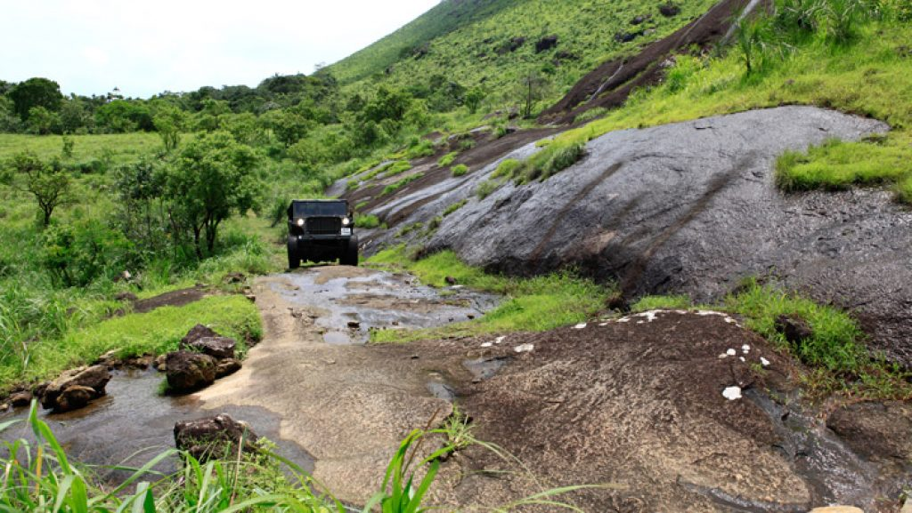

Have any question?
Dial toll free No: +12 365 5233

ABOUT DISTRICT
Kottayam: city of three 'L's - Literacy, Lakes and Latex.
Kottayam is a city in the Indian state of Kerala.It is located in central Kerala and is also the administrative capital of Kottayam district.Bordered by the lofty and mighty Western Ghats on the east and the Vembanad Lake and paddy fields of Kuttanad on the west, Kottayam is a land of unique characteristics.Panoramic backwater stretches, lush paddy fields, highlands, hills and hillocks, extensive rubber plantations, places associated with many legends and a totally literate people have given Kottayam District the enviable title:The land of letters, legends, latex and lakes. The city is an important trading center of spices and commercial crops, especially rubber. Most of India’s natural rubber originates from the acres of well-kept plantations of Kottayam, also home to the Rubber Board.Kottayam is also called as “Akshara Nagari” which means the “city of letters” considering its contribution to print media and literature.

Ilaveezha poonchira: a hill station near Melukavu Mattom, 60kms from Kottayam is gaining tourist importance.Located among three beautiful hillocks Mankunnu, Kudayathoormala and Thonippara, Poonchira is a place of picturesque charm. Legends say that the pool here was a bathing place for Panchali the legendary heroine of Mahabharata...more

Kumarakom is a small village 14 km. west of Kottayam. It is a part of Kuttanad, which is a ‘ wonder land ‘, lying below sea level, comprising of a number of islands, in the back waters. Kumarakom Village covers an area of 5166 Ha of which 2413 Ha is lake portion, 1500 Ha is paddy fields and the remaining portion of 1253 Ha is dry land. Kumarakom is...more

Vagamon Situated 64kms from Kottayam, this enchanting hill station at an elevation of 1100 metres above sea level is a trekker’s paradise. This enchanting hill station on the Idukki – Kottayam border dotted with tea gardens and meadows, will soon be one of India’s foremost Eco tourism projects. The breeding centre of the Kerala Live stock Board is located here.

Thazhathangadi Juma Masjid is one of the oldest mosques in India (about 1,000 years old). It is believed that Habib Dinar (son of Malik Dinar who introduced Kerala to Islam) constructed the masjid. It is built in the traditional Kerala style of architecture. It is famous for its richness of architecture, wood caring and the beauty. This mosque is situated on the bank of Meenachil river.